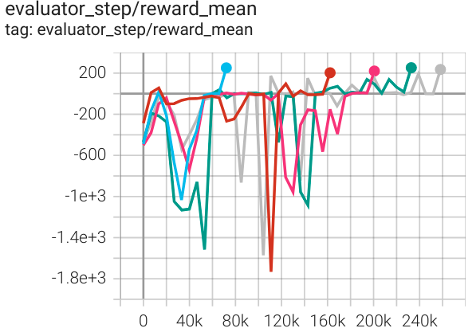
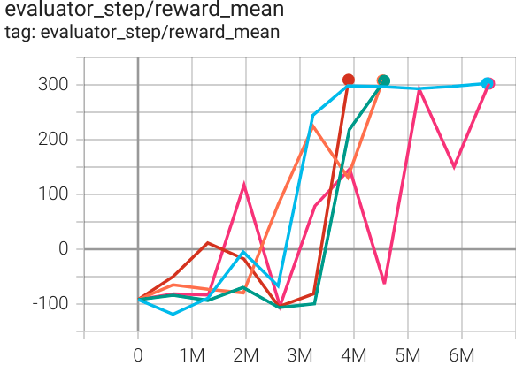
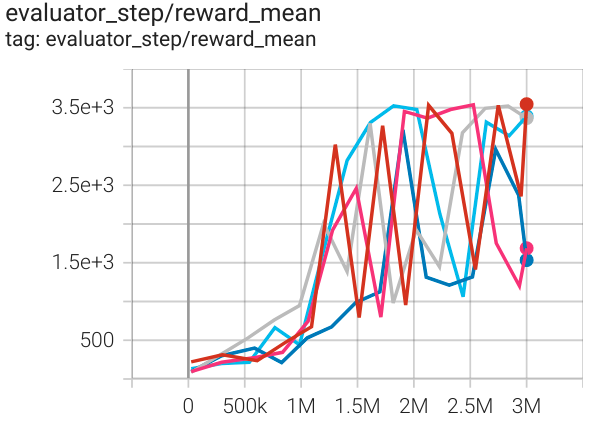

GAIL¶
Overview¶
GAIL (Generative Adversarial Imitation Learning) was first proposed in Generative Adversarial Imitation Learning, is a general framework for directly extracting policy from data, as if it were obtained by reinforcement learning following inverse reinforcement learning. The authors deduced the optimization objective of GAIL from the perspective of occupancy measure. Compared to other learning methods, GAIL neither suffers from the compounding error problem in imitation learning, nor needs to expensively learn the inter-mediate reward function as in inverse reinforcement learning. But similar to other methods, GAIL is also exposed to “the curse of dimensionality”, which makes the scalability much valuable in high-dimension-space problems.
Quick Facts¶
GAIL consists of a generator and a discriminator, trained in an adversarial manner.
The generator is optimized for a surrogate reward provided by the discriminator, usually by policy-gradient reinforcement learning methods, like TRPO, for its sampling nature.
The discriminator can be simply optimized by typical gradient descent methods, like Adam, to distinguish expert and generated data.
Key Equations or Key Graphs¶
The objective function in GAIL’s adversarial training is as below:

where pi is the generator policy, D is the discriminator policy, while \(H(\pi)\) is the causal entropy of policy pi. This is a min-max optimization process, and the objective is optimized in an iterative adversarial manner. During training, D has to maximize the objective, while pi has to counter D by minimizing the objective.
Pseudo-Code¶

Extensions¶
MAGAIL (Multi-Agent Generative Adversarial Imitation Learning)
Multi-agent systems tend to be much more complicated, due to the heterogeneity, stochasticity, and interaction among multi-agents.
MAGAIL：Multi-Agent Generative Adversarial Imitation Learning extended GAIL to multi-agent scenarios. The generator is redefined as a policy controlling all agents in a distributed manner, while the discriminator is distinguishing expert and generates behavior for each agent.
The Pseudo-Code is as following:

Other perspectives to understand GAIL
GAIL is closely related to other learning methods, and thus can be understood in different views.
A Connection Between Generative Adversarial Networks, Inverse Reinforcement Learning, and Energy-Based Models indicated GAIL’s implicit connection to GAN, IRL, and energy-based probability estimation.
Implementation¶
The default config is defined as follows:
- class ding.reward_model.gail_irl_model.GailRewardModel(config: easydict.EasyDict, device: str, tb_logger: SummaryWriter)[source]¶
- Overview:
The Gail reward model class (https://arxiv.org/abs/1606.03476)
- Interface:
estimate,train,load_expert_data,collect_data,clear_date,__init__,state_dict,load_state_dict,learn- Config:
- 1
typestr gail | RL policy register name, refer | this arg is optional, - to registry
POLICY_REGISTRY| a placeholder - 2 | ``expert_data_ str expert_data. | Path to the expert dataset | Should be a ‘.pkl’
- path`` .pkl | | file
- 3 | ``update_per_ int 100 | Number of updates per collect |
- collect`` | |
4 |
batch_sizeint 64 | Training batch size | 5 |input_sizeint | Size of the input: || obs_dim + act_dim |- 6 | ``target_new_ int 64 | Collect steps per iteration |
- data_count`` | |
7 |
hidden_sizeint 128 | Linear model hidden size | 8 |collect_countint 100000 | Expert dataset size | One entry is a (s,a)| | tuple- 1
Benchmark¶
environment |
best mean reward |
evaluation results |
config link |
expert |
|---|---|---|---|---|
LunarLander (LunarLander-v2) |
200 |
 | DQN |
|
BipedalWalker (BipedalWalker-v3) |
300 |
 | SAC |
|
Hopper (Hopper-v3) |
3500 |
 | SAC |
Reference¶
Ho, Jonathan, and Stefano Ermon. Making efficient use of demonstrations to solve hard exploration problems. [https://arxiv.org/abs/1606.03476 arXiv:1606.03476], 2019.
Song, Jiaming, et al. Multi-agent generative adversarial imitation learning. [https://arxiv.org/abs/1807.09936 arXiv:1807.09936], 2018.
Finn, Chelsea, et al. A connection between generative adversarial networks, inverse reinforcement learning, and energy-based models. [https://arxiv.org/abs/1611.03852 arXiv:1611.03852], 2016.